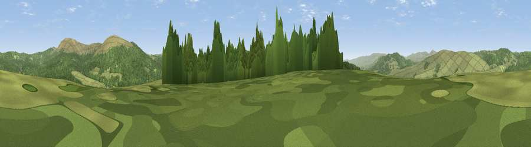

Viewpoint c11927_7178
#29777 in England · top 59% of its area beats it · —The view, rendered

A 360° render of this exact spot computed from the terrain model, tree cover and land cover — summer colours, afternoon light, calibrated against photographs of famous viewpoints. Real trees, hedges and buildings will differ in detail.
The panorama
Grey silhouette: terrain skyline in each direction (720 bearings, Earth curvature and refraction included). Dashed green: skyline with trees (+15 m) and buildings (+8 m) as obstacles. Blue strip: how far the ground is visible on each bearing.
Where the view opens
Wedge length = distance to the farthest visible ground on that bearing (vegetation-aware). Rings at 10, 25 and 50 km.
What fills the view
59% woodland · 41% grassland
Angular shares of the visible panorama (visual magnitude), not map area. Landscape diversity 0.30 (0–1 Shannon).
Key numbers
More beautiful places nearby
The staircase of upgrades: each row has a higher view potential than everything closer. Driving times are estimates from straight-line distance, calibrated against real road routing — check an actual route before setting out.
| Place | Direction | Drive | Score |
|---|---|---|---|
| Deadwater Fell | ENE · 4 km | ~9 min | 79.4 |
| Viewpoint c11995_7247 | NE · 5 km | ~11 min | 82.1 |
| Viewpoint c12273_7856 | ENE · 38 km | ~57 min | 83.7 |
| Viewpoint c12396_7887 | ENE · 43 km | ~62 min | 85.7 |
| Viewpoint near Kirknewton | NE · 47 km | ~68 min | 86.1 |
| Viewpoint near Chillingham | ENE · 57 km | ~79 min | 88.1 |
| Ullock Pike | SSW · 76 km | ~100 min | 89.4 |
| Long Side | SSW · 76 km | ~100 min | 89.5 |
55.25982, -2.64783 · source: screening · position refined by local search. Computed location — check access rights before visiting.